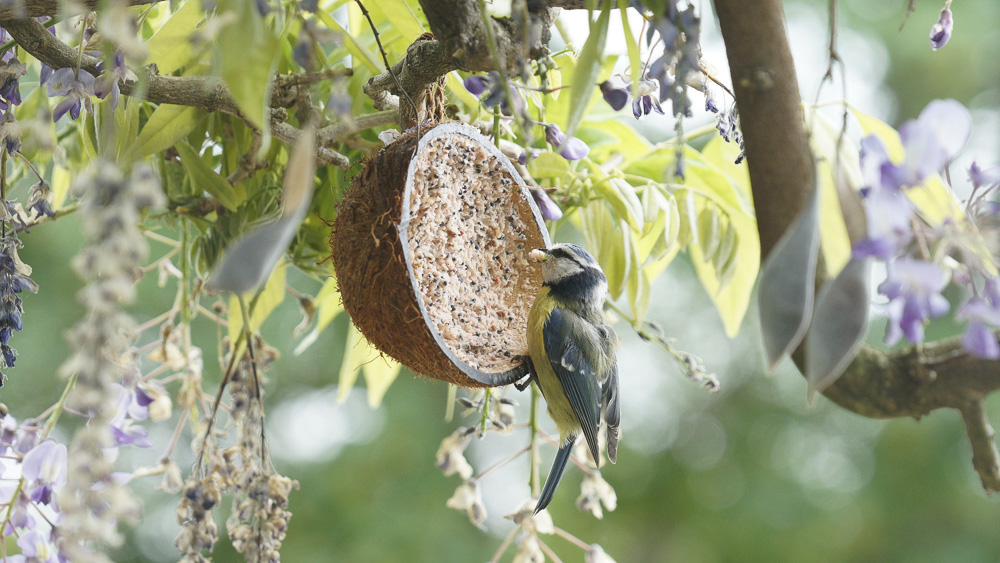
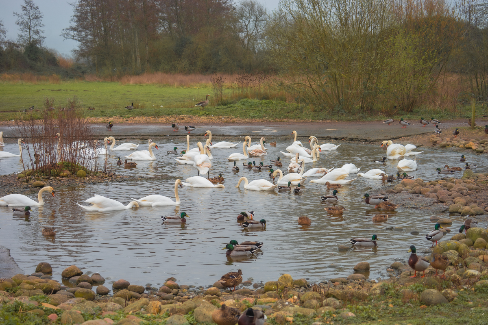
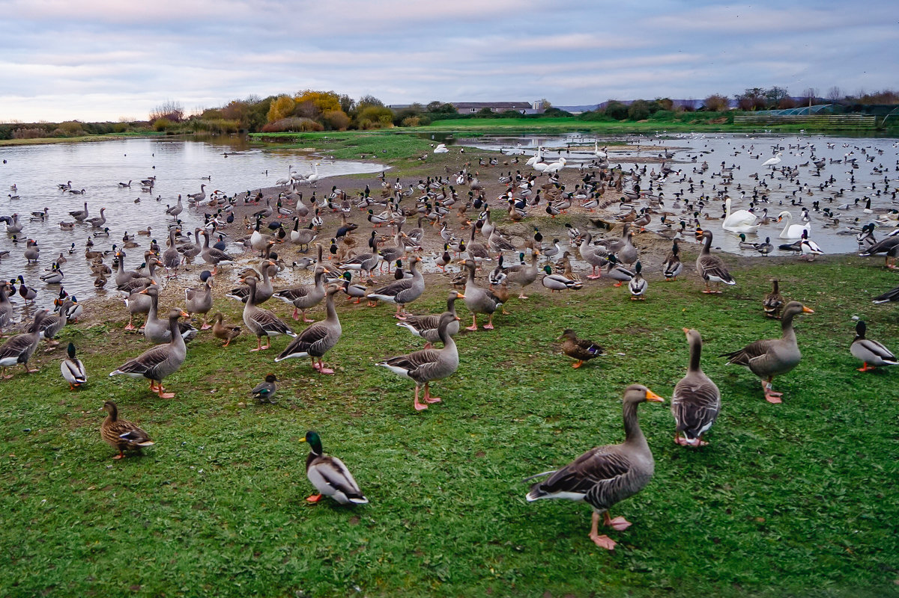

Garden
Common species from my garden and local reserves.
Photographs & field notes
A personal collection of bird and wildlife photographs, field notes and identification references. Browse galleries or jump to the reference table.


The Turnstone is a small, robust wader famous for its habit of flipping stones and seaweed to uncover food. Often seen along rocky shores, it’s a passage migrant in the UK, delighting birdwatchers during spring and autumn migration.

Common species from my garden and local reserves.

Wetland and shoreline sightings.

Owls, woodland hunters and seasonal behaviour.
Amateur naturalist photos and brief field notes. Click any image to open a larger view with captions and a close control. For identification, see the Bird Info table or external guides: RSPB, Birdspot.